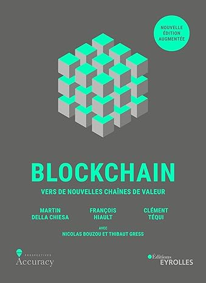

Blockchain : vers de nouvelles chaînes de valeur
Écrit par : Martin Della, François Hiault et Clément Téqui avec Nicolas Bouzou et Thibaut Gress
Publié le : 2 mai 2019
Numéro ISBN13 : 978-2212571899
Nombre de page : 318
Langue : Français
Résumé :
Rupture technologique, phénomène économique et sociétal, la Blockchain est
devenue en quelques années un terme familier, une promesse de futur transformé, une notion centrale. Adulée ou détestée,
elle reste cependant mal comprise, car complexe et singulière. Pour autant, maîtriser cette innovation est devenu indispensable
pour cerner les nouvelles règles du jeu de l'économie mondiale. C'est l'objet de cet ouvrage.
Trop souvent réduite aux seules questions de confiance et de décentralisation, la Blockchain est ici restituée selon toute sa
densité par une approche pluridisciplinaire : racontée dans son épaisseur historique, pédagogiquement décrite du point de vue
technique, envisagée selon ses applications économique et financière, elle fait également l'objet d'une analyse philosophique
destinée à en cerner la singularité.
Les auteurs expliquent dans son intégralité une révolution qu'ils considèrent de l'ampleur de celle d'Internet. Ils donnent
ainsi à tous les clés de compréhension et les leviers d'action stratégique face à ce new deal technologique, économique et social.